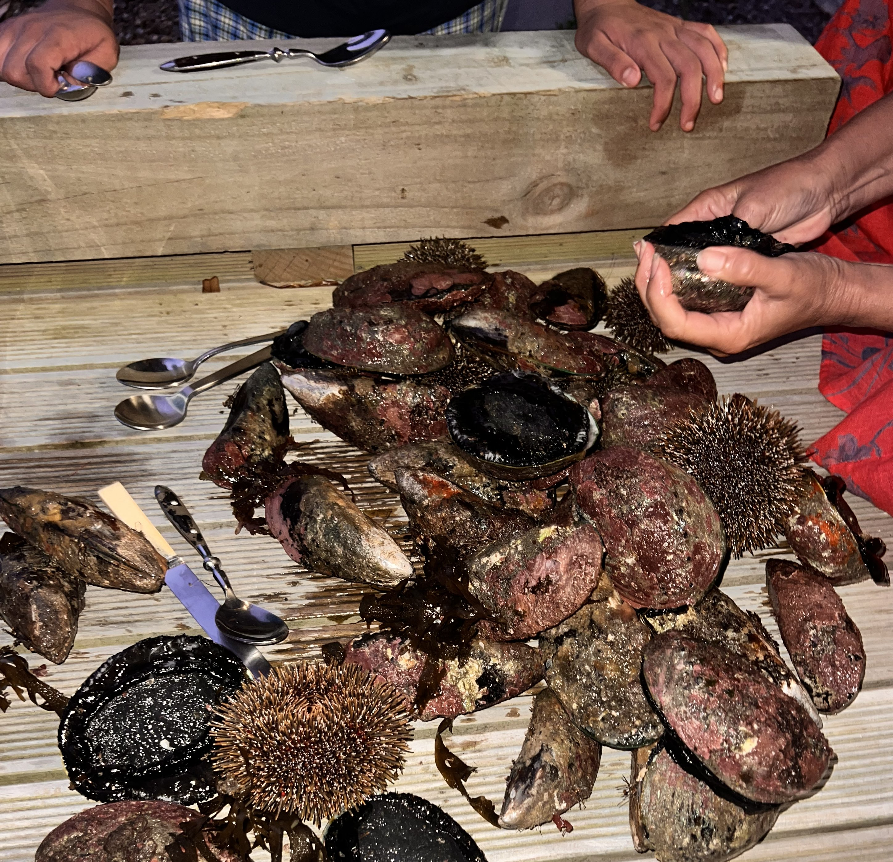

Te Whare Tapa Whā
- Taha tinana
(physical wellbeing) - Taha hinengaro
(mental wellbeing) - Taha wairua
(spiritual wellbeing) - Taha whānau
(family wellbeing)

This is a concept that im familiar with myself, Iv’e had the odd day here or there where I’ve just sat at the desk for the whole part of the day, but most of the time I remember to get out of the houseI love going for a walk just up the hill in Strathmore park, through the bush and to a good lookout of breaker bay. At least once a week I like to go snorkeling (if the weather permits) and I find that taking moments in the water and in your walks to stop, breathe in your surroundings and notice the steady changes of the whenua. Gathering food and cooking togther in grattitude is a great way of connecting with your whānau.

For the past month my sister and baby nephew have been staying with us for the last month, and it has felt like a small family along with my partner. The rhythm of the day is waking, working then cooking and sharing together. I have been enjoying this sort of lifestyle at the moment. Your whanau and your friends are the Taha whānau. They are walls that support you. I will continue to reach out to my friends and family in balance with my studies.
I would also like to find more regular sleeping patterns for the rest of this course, getting around 7 hours would bee preeeetty ideal. At home we aet amazing and varied kai (asian is my fav: char keow tao üò§ üò§ üò§ ) at home as both my partner and I love to cook, foods a big part of life. Getting some basic exercise during the week and eating healthy varied fun foods, is a good way to look after your tinana.

I want to practice my mindfulness each day in some I haven't been consistent so far to my first drafted Learning Plan"
One of my goals during this course is to allot time everyday to a form of mediation. I plan on setting aside 15 minutes in the morning everyday to pick a guided meditation or just a breathing exercise. I will mark off each day with the calender below live, as a way to motivate myself.
▼▼▼ Check in to see how I'm doin..* ▼▼▼
*disclaimer, I did not write the code for this calender, it is pulled,plugged,and edited from an online template for a calender, and the dates live in two arrays. As this process is manual meaning I have to edit the .js fle locally, it has a second functionality, If the calender stops updating, you know I've carked it.
BLUE = Meditated that day. ie: [4,5]
RED = Didn't meditate. ie [1,2,3]